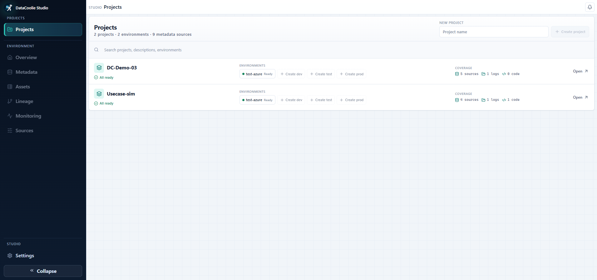

DataCoolie Studio — Visual Metadata, Lineage, Sources, and Monitoring¶
DataCoolie Studio is the local-first visual companion to the DataCoolie ETL framework. Use it to organize projects and environments, edit pipeline metadata, trace lineage, inspect assets, connect storage, and investigate ETL runs from one web interface.
Explore DataCoolie Studio on GitHub Run Studio locally

Beta: install with pip
DataCoolie Studio is currently beta software and requires Python 3.11 or newer. Follow Studio setup to install and launch the published package.
Review the repository before using Studio with production metadata or shared infrastructure.
DataCoolie and Studio work together¶
DataCoolie remains the execution framework. Studio makes its files, lineage, and operational evidence easier to explore; it is not a replacement for an ETL engine or a workflow orchestrator.
| Component | Responsibility |
|---|---|
| DataCoolie | Reads declarative metadata and executes ETL with Polars or Spark on local, Fabric, Databricks, or AWS runtimes. |
| DataCoolie Studio | Organizes projects and environments, edits metadata, derives assets and lineage, and visualizes execution and system logs. |
| Source of truth | Your original JSON, YAML, XLSX, SQL, Python, and log files remain authoritative. Studio keeps local workspace state, cache, and backups, and writes to a source only after an explicit save operation. |
Already have a DataCoolie project? Add its metadata to a Studio environment, then attach execution/system logs and code artifacts when you need richer monitoring and lineage.
Choose a screen by question¶
Use this map when you know the question you need to answer but not which Studio page to open.
| Question | Open this page | What you get |
|---|---|---|
| Which projects and environments are ready? | Projects | Project readiness, environments, source coverage, and quick navigation. |
| What needs attention in this environment? | Overview | Metadata, lineage, monitoring, freshness, and next-action summaries. |
| How is this pipeline configured? | Metadata | Connections, dataflows, schema hints, ordered transforms, and validation issues. |
| What tables, paths, and references exist? | Assets | Searchable asset inventory, roles, provenance, dependencies, and unresolved references. |
| What is upstream or downstream of this asset? | Lineage | Interactive metadata, SQL, and Python relationships with run-status context. |
| Where do metadata, SQL, code, and logs come from? | Sources | Local or cloud bindings, read/cache status, validation, synchronization, and log refresh. |
| Is the environment healthy overall? | Monitoring · Overview | Health KPIs, trends, runtime context, and attention signals. |
| Which job run failed or took too long? | Monitoring · Jobs | Job status, duration, stages, child flows, reconciliation, and drill-in evidence. |
| Which source-to-destination run has a problem? | Monitoring · Dataflows | Phase timing, workload, watermarks, and source/destination context. |
| Are failures repeating or spreading? | Monitoring · Failures | Failure categories, signatures, blast radius, endpoints, and stages. |
| Is data stale or is a watermark stuck? | Monitoring · Freshness | Check age, stale signals, watermark coverage, movement, and skip streaks. |
| Where is runtime spent? | Monitoring · Performance | Duration distributions, bottleneck phases, throughput, and optimization candidates. |
| Which workloads read or write the most? | Monitoring · Volume | Rows, bytes, files, workload mix, storage deltas, and high-volume candidates. |
| Is table maintenance effective? | Monitoring · Maintenance | Maintenance health, reclaimed storage, removed files, and destination efficiency. |
| Can the monitoring evidence be trusted? | Monitoring · Diagnostics | Job linkage, reconciliation, evidence completeness, and cache/source warnings. |
| How is Studio itself configured? | Settings | Timezone, source checks, workspace database, caches, diagnostics, and capability modules. |
Screenshot coverage
This overview, the interface tour, and the monitoring guide include 15 representative workflow screenshots maintained in the DataCoolie Studio repository. They show the current navigation and page surfaces using a local workspace; source health and monitoring values vary with the workspace data. Settings is documented from the shipped source but does not yet have a screenshot. The capability-gated Master Data route is a placeholder, so it is not presented as an operational feature.
What you can do in Studio¶
-
Edit pipeline metadata
Work with JSON, YAML, and XLSX metadata in a structured editor. Studio validates changes and creates a backup before replacing the original file.
-
Explore assets and lineage
Discover assets and trace upstream or downstream relationships inferred from metadata, SQL, and Python evidence without creating merged metadata.
-
Investigate execution operations
Review jobs, dataflows, failures, diagnostics, performance, volume, maintenance, and freshness from execution and system logs.
-
Connect where your project lives
Read from local storage, Amazon S3, MinIO, ADLS, OneLake, Google Cloud Storage, or Databricks. Cloud credentials use the operating-system credential store.
Product tour and detailed guide¶
Product tour and detailed guide.
1. Projects — organize workspaces.
2. Environment Overview — assess readiness.
3. Metadata — inspect and edit pipeline definitions.
4. Assets — inventory the data estate.
5. Lineage — trace relationships across files.
6. Sources — connect metadata, SQL, code, and logs.
Monitoring — choose the focused operational page¶
Monitoring — choose the focused operational page.
7. Monitoring Overview — triage environment health.
8. Jobs — investigate orchestrated runs.
9. Dataflows — analyze source-to-destination execution.
10. Failures — find repeated causes and blast radius.
11. Freshness — inspect age and watermark movement.
12. Performance — locate runtime pressure.
13. Volume — understand workload and storage change.
14. Maintenance — verify table-care outcomes.
15. Diagnostics — validate monitoring evidence.
Settings — configure Studio itself¶
Settings — configure Studio itself.
Recommended investigation workflow¶
- Open Overview and identify the affected area.
- Confirm metadata, SQL, code, and log currency in Sources.
- Use Metadata or Assets to find the definition and affected object.
- Trace impact in Lineage.
- Triage run health in Monitoring Overview.
- Move to the focused Monitoring page that matches the symptom.
- Check Diagnostics before concluding that missing evidence means healthy or failed behavior.
Run Studio locally¶
Add only the cloud integrations you need.
Troubleshooting the first workspace.
Frequently asked questions¶
Does Studio run my ETL pipelines?¶
DataCoolie executes the pipelines. Studio currently focuses on project setup, metadata, assets, lineage, sources, and monitoring evidence. Use your existing scheduler or orchestrator to decide when ETL jobs run.
Does Studio overwrite my metadata?¶
The original metadata remains the source of truth. When you save from the editor, Studio validates the document and creates a backup before replacing the file. The write happens only after you explicitly choose Save to Source.
Can Studio work with Fabric, Databricks, and AWS?¶
Yes. OneLake and ADLS cover Microsoft Fabric storage, Databricks support is
included in the base installation, and the s3 extra supports Amazon S3. The
Studio repository also provides MinIO and Google Cloud Storage integrations.